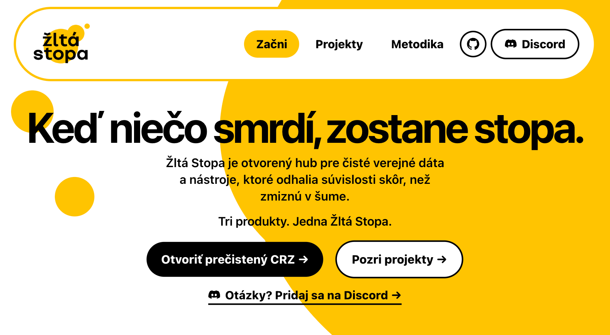
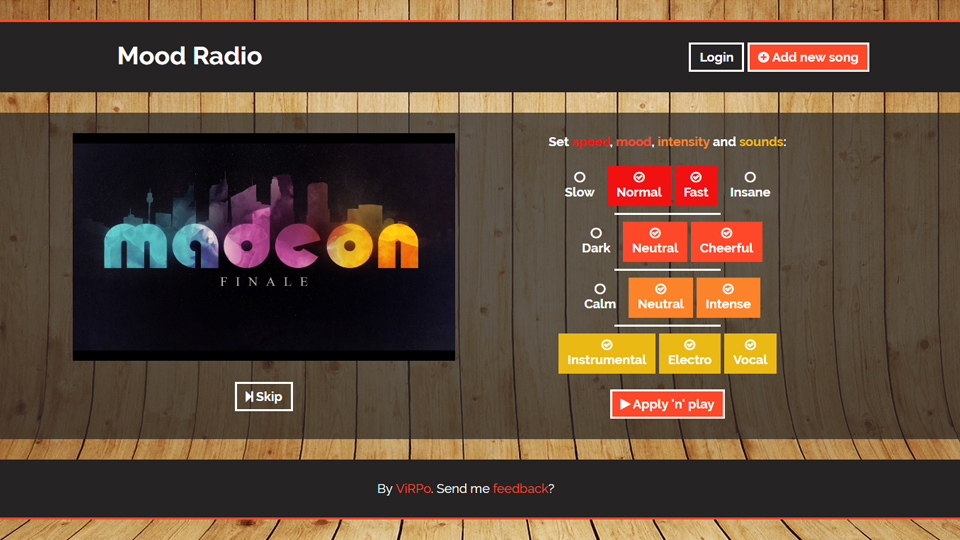
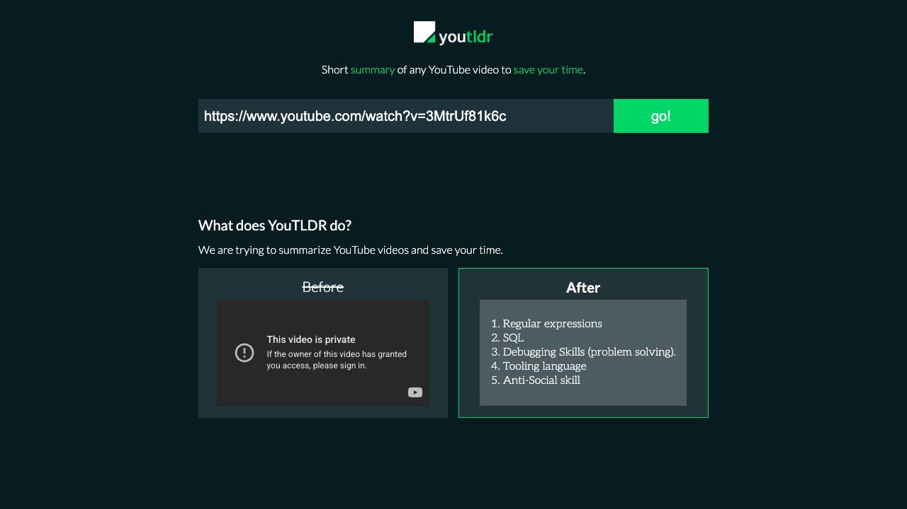

On This Day
Writing
What ten years at Slido taught me about polish
Three websites that still feel alive
Useful AI beats magical AI every single time
On interfaces that invite touch before thought
About
Peter Hraska. Design engineer from Slovakia. Ten years at Slido. Side projects about maps, AI, music, places, and useful weird little internet toys.
Built Things

Investigative AI Hackathon win Žltá Stopa Agentic kit for investigative journalists to interrogate public data. Built with a team of four, helping for free.
School project 2013 Mood Radio Mood-based music picker from 2013. Basically pre-Spotify, still weirdly timeless.
Anti-clickbait extension youtldr.com YouTLDR Adds the missing summary to YouTube, so long clickbait collapses into one useful sentence.